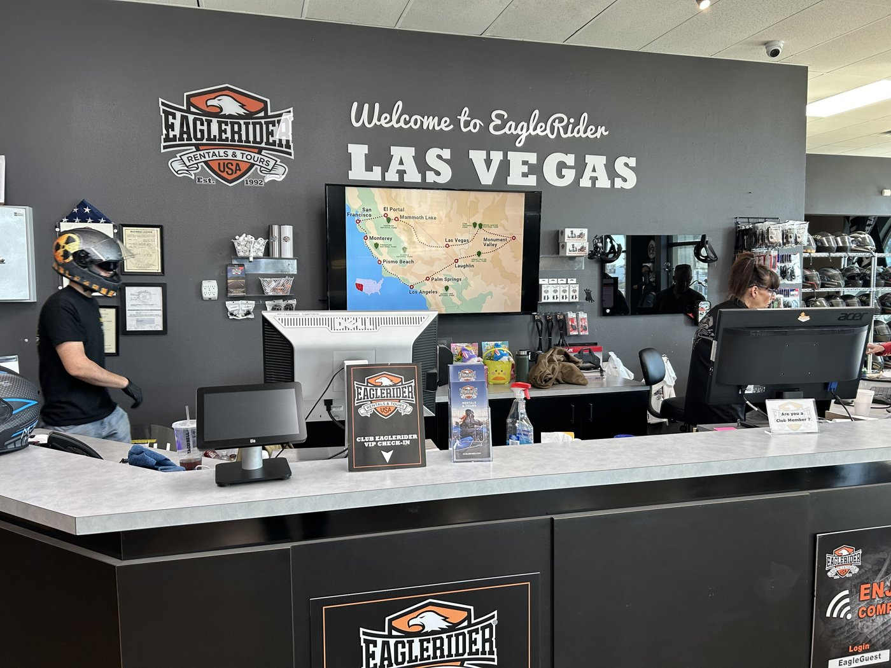
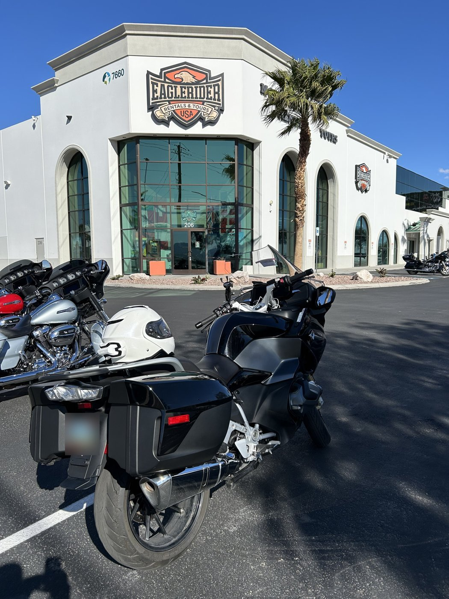
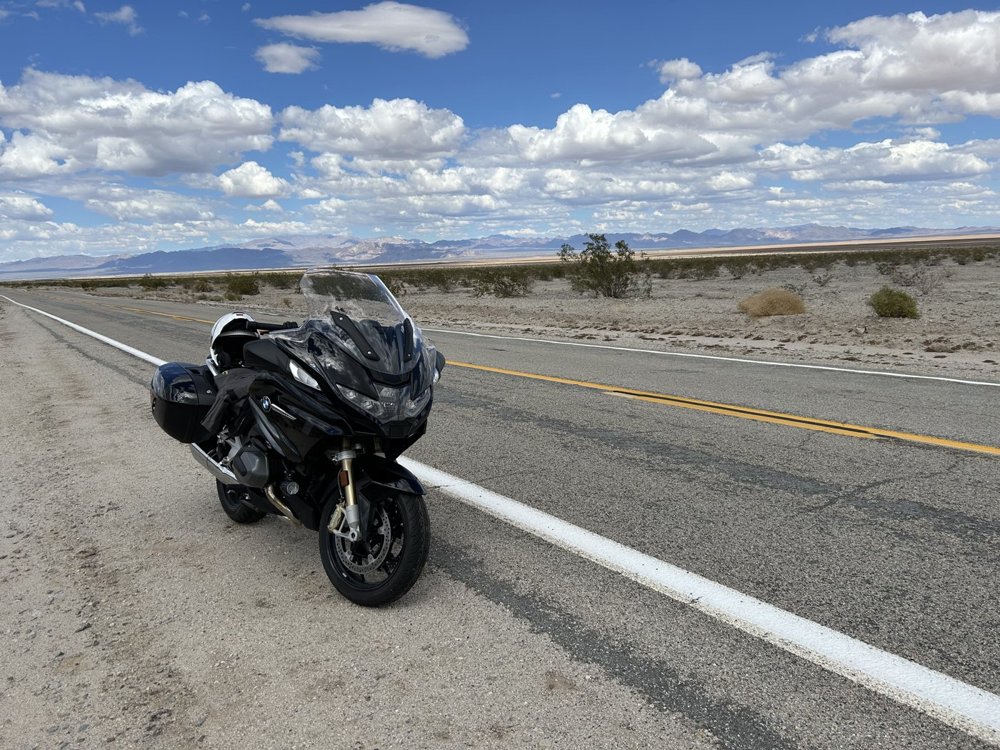
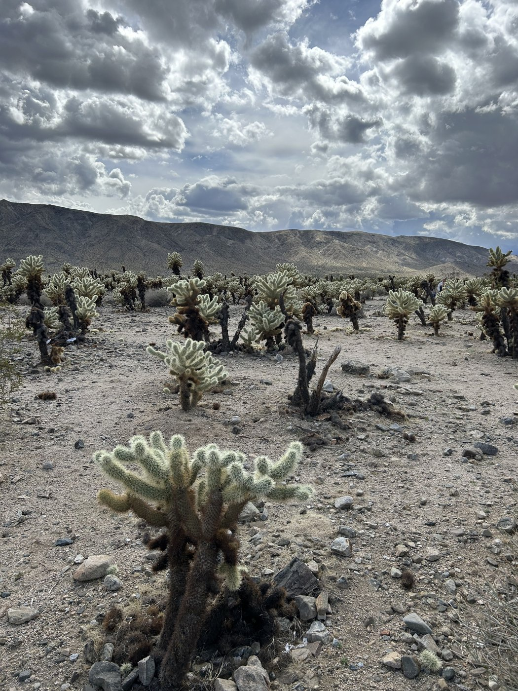
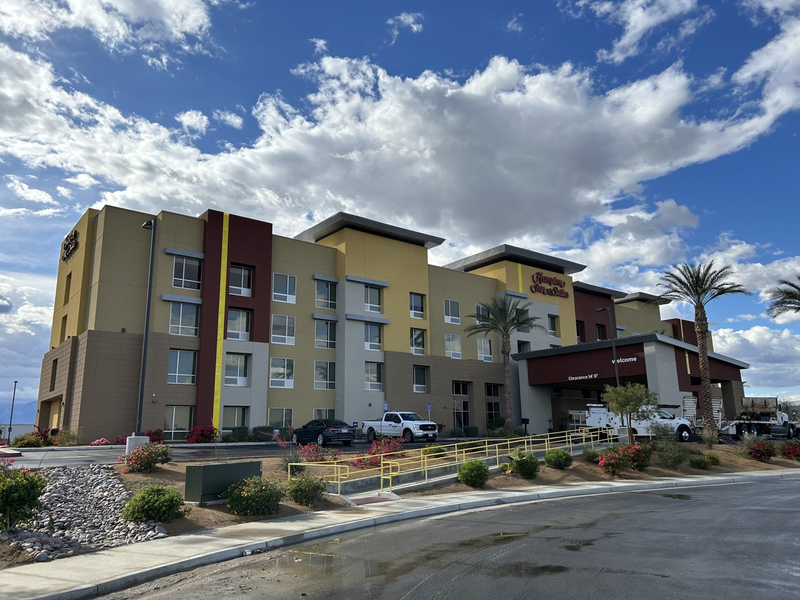
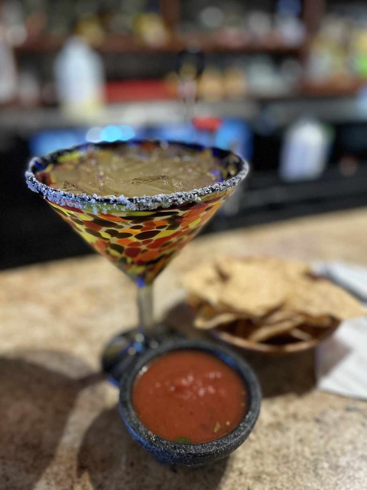
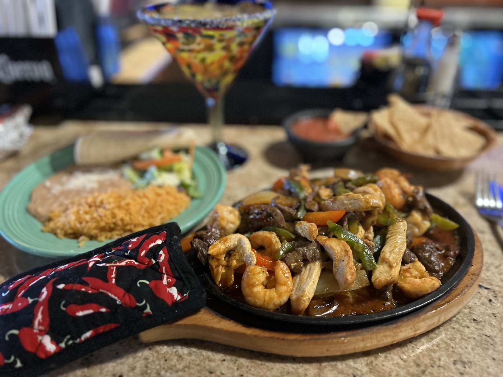
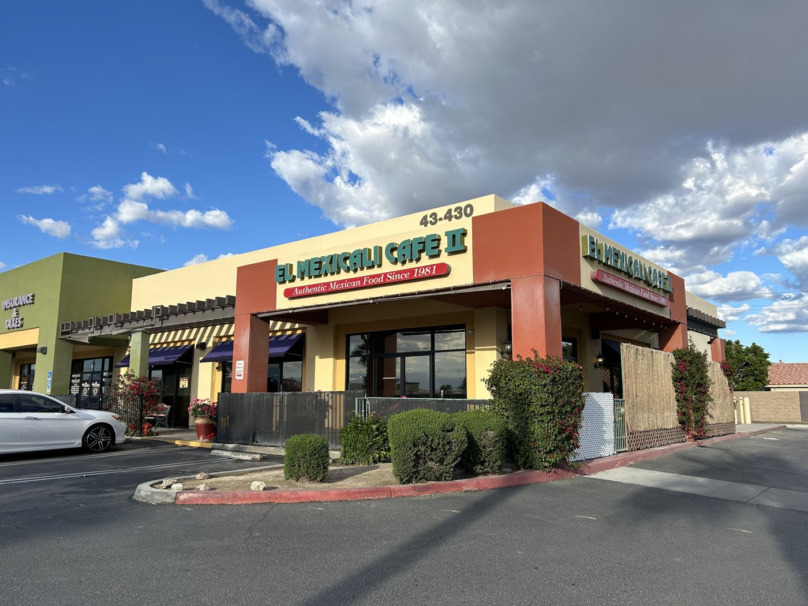

Day 1 · Mon, Mar 18
Las Vegas, NV Indio, CA
Picking up the bike at EagleRider Las Vegas, then south across the Mojave and through Joshua Tree National Park to Indio.
By way of
- Joshua Tree National Park








Dining
El Mexicali Cafe II
Indio, CA
Four generations of homestyle Mexican cooking.